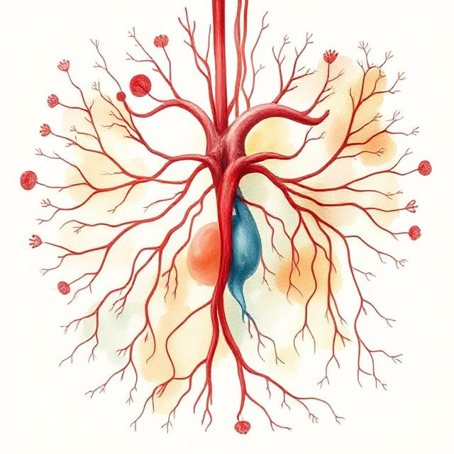

Úvod do teorie systémů
Teorie systémů je interdisciplinární věda, která analyzuje vzorce a interakce mezi složkami složitých celků a vztahy mezi nimi. Cílem teorie systémů je zkoumat, jakým způsobem jsou jednotlivé části (tzv. elementy) propojeny do celku (systému), jak spolu navzájem interagují a jakým způsobem tento celek komunikuje s okolím. Teorie systémů nachází uplatnění napříč různými oblastmi, včetně biologie, inženýrství, ekologie, ekonomie, sociálních věd a kybernetiky. Klíčovým přínosem teorie systémů je její schopnost identifikovat obecné principy, které jsou univerzální pro širokou škálu systémů, což umožňuje lepší pochopení a modelování jejich chování.
- Definice systému
- Klíčové vlastnosti systému
- Elementy (prvky systému): Jednotlivé komponenty, které společně tvoří systém. Mohou to být fyzické objekty (např. orgány v těle) nebo nehmotné entity, jako jsou informace či vztahy. Elementy vykazují specifické chování a vlastnosti, které přispívají k chování systému jako celku.
- Interakce a relace: Systém se chová jako celek díky vzájemným interakcím mezi jeho elementy. Tyto interakce mohou být přímé (např. mechanické spojení mezi součástkami stroje) nebo nepřímé (např. přenos informace mezi nervovými buňkami v mozku). Zásadní roli zde hrají feedback mechanismy (zpětná vazba), které umožňují systému reagovat na změny v okolí či uvnitř samotného systému
- Hranice systému Každý systém má své hranice, které určují, co je součástí systému a co patří do jeho okolí. Hranice mohou být fyzické (např. plášť motoru) nebo abstraktní (např. organizační hranice firmy)
- Prostředí (okolí systému) Systémy existují v kontextu svého prostředí, se kterým mohou (ale nemusí) interagovat. Prostředí je soubor elementů, které nejsou součástí systému, ale mohou jej ovlivňovat.
- Typologie systémů: Otevřené vs. uzavřené systémy
- Otevřené systémy: Otevřený systém si vyměňuje energii, materiál či informace s okolním prostředím. Tato výměna probíhá prostřednictvím tzv. vstupů a výstupů. Vstupy mohou zahrnovat energii, suroviny, informace nebo jiné zdroje, zatímco výstupy představují produkty nebo odpady systému. Příkladem otevřeného systému je lidský organismus, který přijímá potravu (vstup) a vylučuje odpadní látky (výstup).
- Uzavřené systémy: Na rozdíl od otevřených systémů se uzavřené systémy neúčastní interakce s okolním prostředím, nebo tuto interakci minimalizují. V praxi jsou skutečně uzavřené systémy velmi vzácné, jelikož většina systémů nějakým způsobem komunikuje s okolím. V laboratorních podmínkách se však může uzavřený systém použít pro studium specifických procesů bez vlivu externích faktorů.
- Struktura systému: Hierarchické uspořádání
- Dynamika systému a rovnováha
- Zpětná vazba v systému
- Pozitivní zpětná vazba: Posiluje změny v systému a vede k růstu nebo akceleraci určitého procesu. Například růst populace bez přítomnosti predátorů vede ke zvýšení porodnosti, což zvyšuje počet obyvatel.
- Negativní zpětná vazba: Naopak snižuje vliv změn a stabilizuje systém. Například termostat reguluje teplotu místnosti tím, že zapne topení, když teplota klesne, a vypne jej, když teplota dosáhne požadované úrovně.
- Kybernetika a systémy řízení
- Aplikace teorie systémů 
- Představme si počítačový systém. V počítači existuje hardware (fyzické komponenty jako procesor, paměť, pevný disk) a software (programy a operační systém, který hardware ovládá). Tyto části spolu musí spolupracovat, aby počítač fungoval. Když selže jedna složka (např. procesor), celý počítač přestane fungovat, i když je pevný disk a paměť stále v pořádku. Stejně tak, když v lidském těle selže srdce nebo plíce, celý organismus může přestat fungovat
- Dopravní systém: Zahrnuje vozidla, silnice, světelné signalizace, řidiče a pravidla silničního provozu. Tento systém musí být dobře organizován, aby doprava byla bezpečná a plynulá. Každá složka (např. semafory) má svou specifickou roli, ale všechny musí spolupracovat, aby systém jako celek fungoval efektivně.
- Oběhový systém v těle je zodpovědný za transport krve, která nese kyslík a živiny do buněk. Krev se pohybuje prostřednictvím srdce, které ji pumpuje do celého těla. Pokud dojde k poruše v oběhovém systému (např. ucpání cév), kyslík a živiny se nedostanou do buněk, což může způsobit jejich poškození nebo smrt. To je příklad toho, jak důležité jsou interakce mezi jednotlivými částmi systému.
Systém je obecně definován jako soubor vzájemně provázaných elementů, které tvoří celek a interagují za účelem dosažení určitého cíle nebo funkce. Elementy systému mohou mít různé povahy – mohou jimi být fyzické objekty, informace, procesy, lidé nebo subjekty. Každý systém vykazuje vlastnosti emergentní (tzv. emergenci), což znamená, že celek vykazuje chování, které není jednoduše odvoditelné z chování jeho jednotlivých částí. Například organismus jako celek má vlastnosti (např. vědomí), které nelze vysvětlit pouze chováním jednotlivých buněk.V každodenním životě se systémy objevují téměř ve všech oblastech: biologické systémy zahrnují např. buňky, orgány a ekosystémy, zatímco technické systémy zahrnují mechanické systémy, počítačové sítě či energetické distribuční soustavy.
Každý systém je definován několika základními atributy:.
Jedním ze základních kritérií pro klasifikaci systémů je jejich schopnost interakce s okolím. Rozlišujeme proto systémy na:
Systémy často vykazují hierarchickou strukturu, což znamená, že systémy mohou být složeny z menších subsystémů, které jsou samy o sobě systémy. Například v biologickém systému organismus obsahuje orgány, které jsou samy systémy složené z buněk, a ty zase obsahují organely. Tato vnořená struktura umožňuje popisovat složité systémy na různých úrovních podrobnosti. V hierarchických systémech je důležitým konceptem dekompozice – možnost rozložit složitý systém na menší části, které lze analyzovat samostatně. Tento přístup se využívá v mnoha oblastech, od návrhu technických systémů až po studium ekosystémů.
Jedním z nejdůležitějších aspektů systémů je jejich dynamické chování. Dynamika systému odkazuje na způsob, jakým systém reaguje na změny ve svém prostředí nebo uvnitř sebe samého. Některé systémy vykazují lineární chování, kdy je odpověď systému přímo úměrná velikosti podnětu, zatímco jiné systémy vykazují nelineární chování, kdy malé změny v jednom prvku mohou mít dramatické dopady na celý systém.
Klíčovou vlastností dynamiky systémů je stabilita a rovnováha. Systém je stabilní, pokud je schopen se vrátit do svého původního stavu po narušení. Rovnováha může být statická (systém zůstává v neměnném stavu) nebo dynamická (systém se neustále mění, ale zachovává určitý vzorec chování). Například ekologické systémy často vykazují dynamickou rovnováhu, kde populace různých druhů kolísají, ale celková stabilita ekosystému zůstává zachována
Klíčovým mechanismem pro udržení rovnováhy a stabilizaci systému je zpětná vazba. Zpětná vazba může být:
Systémy, které jsou schopny automaticky regulovat své chování na základě zpětné vazby, spadají do oblasti kybernetiky. Kybernetika je disciplína, která studuje procesy řízení a komunikace v systémech, a to jak v technických, tak v biologických a sociálních systémech. Základním principem kybernetických systémů je schopnost zpracovávat informace a používat je k dosažení cílů systému prostřednictvím autonomní regulace..
Technické příklady:
Příklad z biologie:
Biologické systémy fungují na stejném principu jako technické systémy – také se skládají z menších částí, které musí spolupracovat, aby organismus nebo ekosystém fungoval jako celek.
Lidské tělo jako systém
Podobně jako v technickém systému má lidské tělo různé subsystémy, které vykonávají specifické funkce. Například oběhový systém transportuje kyslík a živiny ke všem buňkám v těle. Trávicí systém zajišťuje přísun těchto živin tím, že rozkládá potravu na jednodušší látky, které tělo může využít. Pokud jeden z těchto systémů přestane fungovat, může být ohrožen celý organismus.